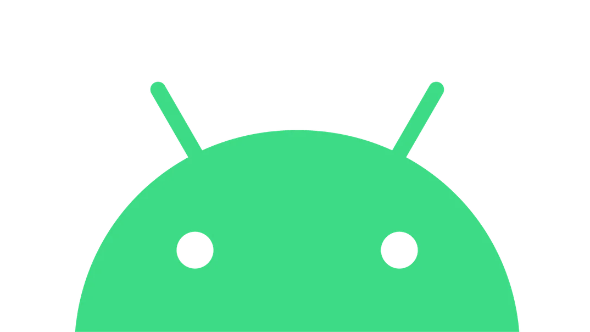

Setup Guide
The Android operating system is found everywhere — on phones, tablets, retro handheld devices, media streaming devices, and even some TVs. This guide is meant to help you get acquainted with game emulation on any number of Android devices.
Prepare your ROM library
Another important aspect of retro gaming is to build your ROM library. Here is a general list of systems that can be played on Android. Its important to be noted that not all systems will run at playable speeds this will depend on your phone processor performance or the emulator madurity so performance may vary. For PS2 and GameCube on lower-end Android devices, I recommend getting PAL region ROMs, because they cap out at 50Hz which will give you better performance than struggling to reach the standard 60Hz found in NTSC region ROMs.
Home Consoles:
Panasonic 3DO
Atari 2600
Atari 5200 (and 800)
Atari 7800
Atari Jaguar
Colecovision
PC Engine (TurboGrafx-16)
PC Engine CD (TurboGrafx-CD)
Nintendo Entertainment System
Famicom Disk System
Super Nintendo
Nintendo 64
Nintendo GameCube
Sega SG-1000
Sega Master System
Sega Genesis
Sega CD
Sega 32X
Sega Saturn
Sega Dreamcast
Neo-Geo / CD
NEC PC-FX
Sony PlayStation
Sony PlayStation 2
Vectrex
Handheld Consoles:
Atari Lynx
Game and Watch
Nintendo Game Boy
Nintendo Game Boy Color
Nintendo Game Boy Advance
Nintendo DS
Nintendo 3DS
Nintendo Virtual Boy
Sega Game Gear
Neo-Geo Pocket / Color
Sony Playstation Portable
Wonderswan / Color
When getting ROM files, I recommend using the “No-Intro” naming convention, which is the standard naming used for ROM sets within RetroArch and other emulation communities. By using no-intro naming, you will be more likely to get box art automatically added when you load up your games in RetroArch or most frontends. If you have a question as to how a game should be named, I recommend checking out the Libretro thumbnails directory, which is what many emulators pull from for their media files. If your game name matches the thumbnail name found in this directory, chances are that it will properly download the media for it.
For roms sharing go to:
Knowledge databaseAdditionally, an important component of a ROM library is maintaining BIOS files. BIOS files are system files necessary for some emulators (GBA, Sega CD, or PS1/PS2), and are helpful in improving accuracy with other systems. These files are copyrighted so you are on your own to find them, but a quick search for a RetroArch bios pack should get you on your way.
Recommended BIOS files:
SEGA CD:
bios_CD_E.bin
bios_CD_J.bin
bios_CD_U.bin
FAMICOM DISK SYSTEM:
disksys.rom
GAME BOY (for boot logo):
gb_bios.bin
GAME BOY COLOR (for boot logo):
gbc_bios.bin
GAME BOY ADVANCE:
gba_bios.bin
NEO GEO:
neogeo.zip
PLAYSTATION:
scph1001.bin
PLAYSTATION 2:
SCPH-90001_BIOS_V18_USA_230.ROM0
TURBOGRAFX-CD:
syscard1.pce
syscard2.pce
syscard3.pce
SEGA SATURN:
saturn_bios.bin
SEGA DREAMCAST:
dc_boot.bin (renamed to boot.bin)
NINTENDO SWITCH:
prod.keys
title.keys
Storage options
If you have a microSD card slot on your device, you may have some decisions to make regarding how the storage works. When using Android 10 or below, you may get prompted to “set the SD card up” when first inserting the SD card. It will ask you to choose between the default portable storage option, or using the card as internal storage. Portable storage means that you will be able to freely take the SD card out of the device and plug it into your PC, as demonstrated in the video above. If you set it to internal storage, you will then be able to install apps on the SD card to save space, but you won’t be able to plug the SD card into your PC — instead, you will have to plug the device into the PC and transfer files via USB instead. Internal storage is a good solution if you want to install a LOT of Android games onto your device, but in general I recommend portable storage for its flexibility.
With Android 11 and above, you will get the same prompt, but file permissions settings are different on these more modern OS versions. This is because these OS versions use scoped storage, which provides apps with file permissions without having to request it of the user, while also protecting the user’s data. For apps that have been updated to accommodate scoped storage, this transition is seamless. But for apps that haven’t been updated (which includes RetroArch and many standalone emulators), they will not be able to access the microSD card if the card has been set up as portable storage. What this means is that in order for all apps to readily access the microSD card, you may have to set it up for internal storage instead, until the apps are updated.
Android Frontends
★ Daijisho
Daijisho is easily the best Android frontend available today, it’s 100% free and does a great job of simplifying the setup process. It also has handy tools like widgets to personalize your experience. This one can also act as your default home app, which means that after you have it set up, you will never have to see the Android interface again. It will consolize your device’s navigation experience. Note that for best results, you should set up your emulators first before adding them via this frontend. Also be sure to use “No Intro” romsets to ensure your media is properly scraped.
ATV Launcher (Pro)
ATV Launcher is an Android frontend most commonly used with TV boxes and tablets. It transforms the standard Android interface into a tile-based one, and has some nice features like widgets and the ability to hide or customize each tile. This allows you to make a clean interface that resembles a gaming console, and also works well when using controllers. There is a free version that works well, but the paid version ($3) is necessary to remove ads and have the ability to hide and customize the tiles. This option is a good choice if you don’t mind still having to navigate through standalone apps and emulators; it’ll still definitely feel like an Android device…but a prettier one.
DIG
DIG is a free emulator frontend that is one of the easiest to set up. It will find your games on the device and organize them into their own sections. You can use a number of different themes for the frontend, but my favorite is this one here, called Alek-a-Like. This frontend has a fair amount of customization options, it runs pretty quickly, but doesn’t feel as polished as something like LaunchBox.
Recommended Emulators
Play Store:
Duckstation -- PSX
Mupen64Plus FZ (Pro)-- N64
Yaba Sanshiro 2 (Pro) -- Saturn
Redream or Flycast -- Dreamcast
DraStic -- Nintendo DS
PPSSPP (Gold) -- PSP
AetherSX2 -- PS2
Lemuroid -- Multiplatform
Not on Play Store:
RetroArch (latest nightly build)
Dolphin Beta or Dev -- GameCube/Wii
Citra MMJ -- Nintendo 3DS
Skyline -- Switch
RetroArch vs standalone emulators
RetroArch is a kitchen-sink emulation program available on a variety of platforms, including Android. RetroArch can play dozens of emulated systems while standardizing options like hotkeys, controls, screen settings, and more. The platform is uniquely challenging to set up.
For that matter i recommend you to follow the RetroGameCorps Retroarch set up guide. In the same matter the channel it's included in the Knowledge Database
RetroArch can emulate a variety of systems, but that doesn’t mean it will be the ideal app for every situation. To its advantage, RetroArch has universal settings which make things like button mapping a breeze, but it can also be less optimized than standalone emulators. This can be especially apparent when using an Android device that isn’t super powerful. Here are some considerations:
- When playing SNES and below systems, RetroArch will almost certainly be the best app to use. In general, only PS1 and above systems should be considered for standalone emulators.
- If you plan on using a frontend like LaunchBox or The Reset Collection, RetroArch is beneficial because you can set up a universal hotkey to quit RetroArch — very few standalone emulators have this feature. What this means is that when using RetroArch, you can press a key combination to quit the game and go right back to your frontend to navigation to another game; on standalone emulators, you will need to tap or swipe on the screen to bring up the app’s menu, then choose to quit the app. This sounds like a minor inconvenience on paper, but in real life it can become annoying and will make your Android device feel less like a true “retro console”. So if the navigation experience is important to you and you want to use a frontend, then RetroArch will provide a better setup.
- RetroArch is free, while many standalone emulators cost money (or have certain features hidden behind a paywall). A good example is Sega Dreamcast. The standalone Flycast emulator is free and can upscale the graphics, but the interface is clunky and difficult to navigate. The standalone Redream emulator is much more intuitive and clean, but you will need to make a one-time in-app purchase to unlock upscaling (more on that in the Dreamcast section below). Meanwhile, the RetroArch app has a Flycast core that can handle both upscaling and widescreen hacks with ease, as long as your device is powerful enough to handle it. If your device is struggling to perform using the RetroArch Flycast core, consider using Redream as you will likely get better results.
- In some cases, the RetroArch cores are simply nowhere near as performant as a standalone emulator. A prime example is Nintendo DS; there are multiple core options within RetroArch for NDS, but they all pale in comparison to the (paid) DraStic emulator.
Bottom line: plan on using RetroArch for everything below PS1, but if you have a device powerful enough to run them, you may want to consider using RetroArch for PS1, N64, PSP, Saturn and Dreamcast so you can take advantage of the universal hotkeys (to quickly jump in and out of your games), saves, upscaling, and more. Otherwise, stick with standalone emulators for those higher end systems.